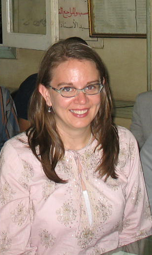

|  |
Elizabeth Smith graduated from the University of Wisconsin-Madison in 1991 with a double major in Anthropology and Comparative Literature and a certificate in African Studies. After living in Egypt for three years where she worked in university administration at the American University in Cairo, she went on to receive her M.A. (1999) and Ph.D. (2006) in Sociocultural Anthropology from New York University.
Smith's Ph.D. research was on how Nubians in Egypt are represented in popular culture, tourism, and museums in Cairo and Aswan. Her current and forthcoming publications resulting from this research address material culture and nationalism in the Nubia Museum of Aswan, race and media images of Nubians, identification with archaeological sites in nostalgia for Nubia, and the circulation of photographs of Nubia in popular culture. Other research interests include ethnographic and archaeological photography, ethnographic film, Middle East ethnography, and marriage in Egypt.
Visit Dr. Smith's website for more information.